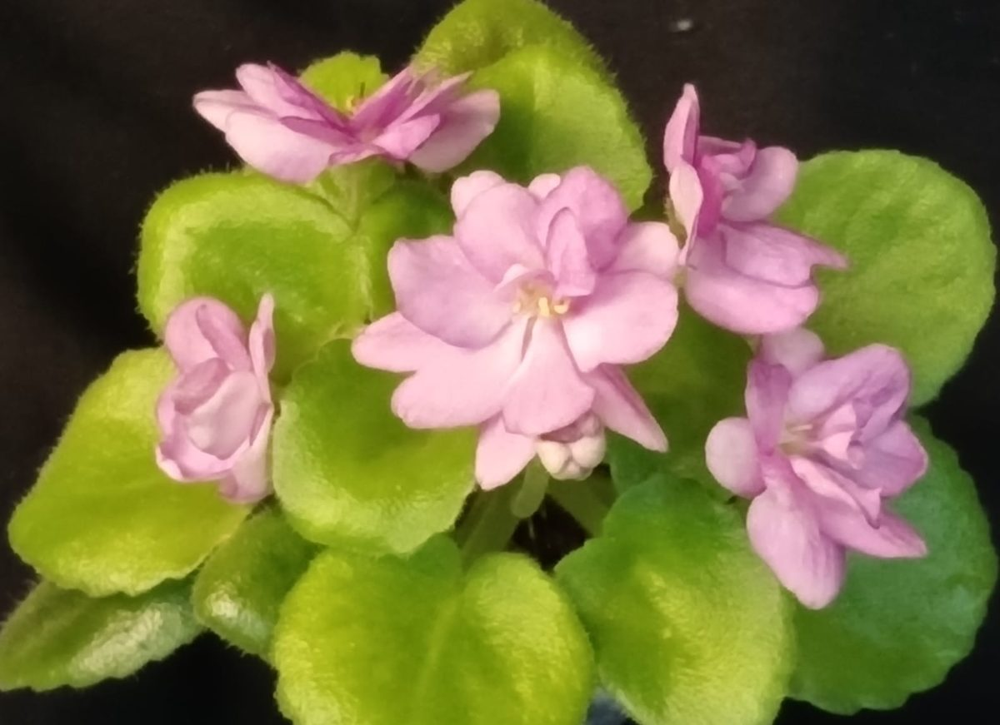

African Violets in South Africa
Decorate your life with African violets! Mzanzi African Violets is a small South African grower of African violets and other gesneriads, including streptocarpus, based in Pringle Bay in the Western Cape.

About us
Graham Goode grows and hybridises his own African violet varieties in Pringle Bay, Western Cape, and also stocks varieties from growers in several other countries.
African violets for South Africans
African violets are easy house plants. They do best at roughly 15–25 °C in bright, indirect light. Our African violet care guide covers watering, light, feeding and propagation.
Our plants
See the plant list for current varieties, parent plants and leaves for propagation. To order, visit Orders & Contact.
Western Cape and the rest of South Africa
We grow in the Western Cape and can send plants and leaves to customers in Cape Town and elsewhere in South Africa. See Location for details.
Free PDF guides
Download our PDF guides on African violet care, leaf types and flower types.